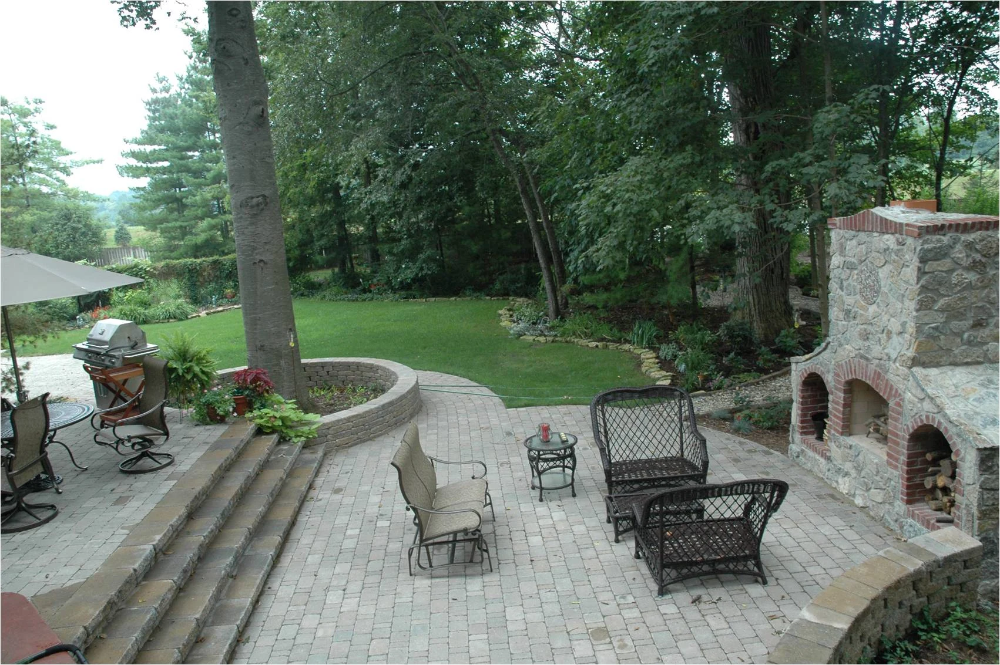
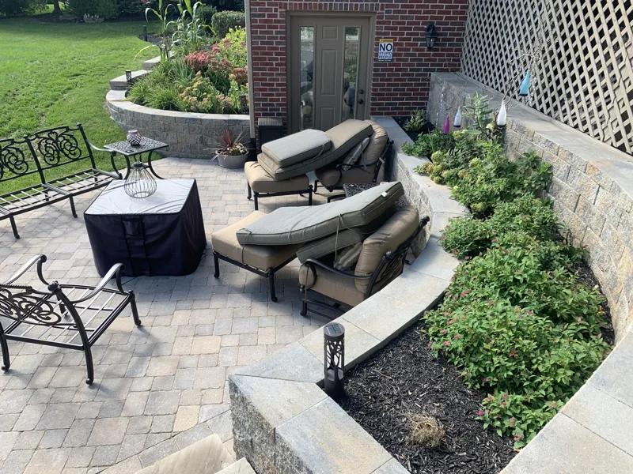
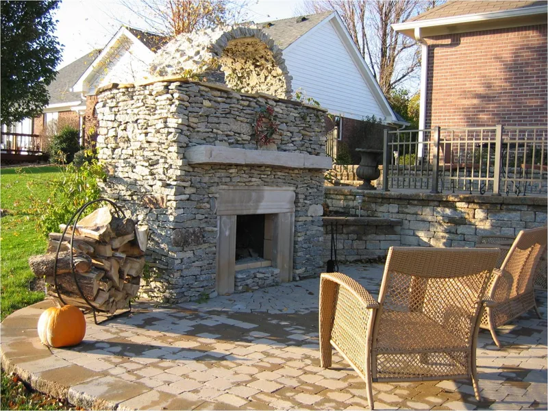
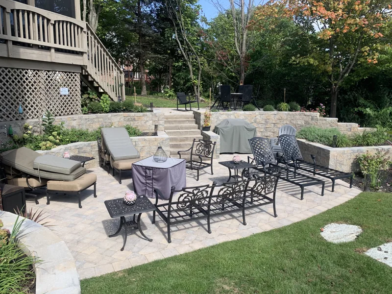
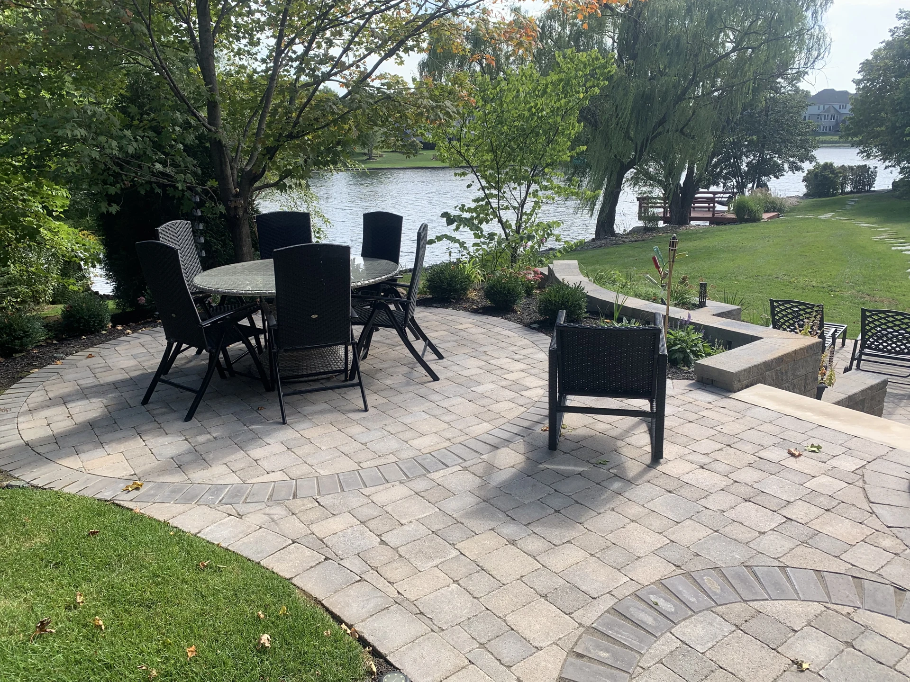

LANDSCAPE DESIGN & OUTDOOR LIVING
Your favorite place.
Just outside.
Thoughtful landscapes. Beautifully built spaces.
A little more room for the life you love.
A BETTER WAY TO BE OUTSIDE
More than a landscape.
A way of living.
The patio that brings everyone together. The quiet corner that’s yours alone. A garden that feels like it has always belonged.
At Outdoor Specialists, we bring landscape design, construction, and ongoing care together to create outdoor spaces that feel right at home.
Meet Outdoor SpecialistsFROM THE FIRST IDEA TO THE FINAL DETAIL
Your outdoors.
Our expertise.
One team for the whole picture.
Explore what’s possible for your property.

Landscapes with intention.
A plan that connects your home, your land, and the way you want to live.

Room to gather.
Patios, fireplaces, kitchens, and structures that make outside feel like home.

Beautiful, season after season.
Reliable landscape maintenance and property care through every Indiana season.
01Landscape design & consultation
See the potential of your property before construction begins. Our designers consider the space, materials, planting, and how everything works together. A master plan can guide a single transformation or a project completed in phases.
- Landscape planning & planting design
- Material, color & texture selection
- Master plans & phased projects
- Landscape lighting & water features
02Hardscapes & outdoor living
Give your landscape lasting structure with custom construction that fits its surroundings. From stonework underfoot to a shaded place to unwind, each element is considered as part of the whole.
- Patios, walkways & retaining walls
- Outdoor fireplaces & kitchens
- Pergolas, gazebos, arbors & bridges
- Fences, ponds, fountains & dry creek beds
03Landscape & lawn maintenance
Keep your residential or commercial property cared for throughout the growing season, with maintenance tailored to the needs of your landscape.
- Mowing, aeration & sidewalk edging
- Spring & fall cleanups and gutter cleaning
- Mulch installation & delivery
- Flowers, tree & shrub pruning
- Fertilization & plant health care
04Site work & year-round services
Practical expertise for the work below the surface and the challenges each season brings. Outdoor Specialists serves both residential and commercial properties.
- Lot clearing, arborist services & bush hogging
- Grading, erosion control, sod & hydroseeding
- Snow removal & ice management
- Firewood sales & trenching
A FEW PLACES WE’VE BROUGHT TO LIFE
Made for moments.
Real spaces. Considered details.
Take a closer look at our work.
Showing all 11 project photos

YOUR NEIGHBORS. YOUR OUTDOOR SPECIALISTS.
Big-picture thinking.
Personal attention.
Based in Zionsville, Outdoor Specialists brings landscape, engineering, and building experience to properties across Central Indiana.
Our designers, construction professionals, and maintenance crews work with your priorities in mind—from your budget and timeline to the details that make a space feel like yours.
Behind every project is a team that takes pride in the work, with site supervisors and project managers ready to answer questions along the way.
Let’s create something lastingIT STARTS WITH A CONVERSATION
What does your
outside look like?
A complete transformation or a little expert care.
Let’s talk about what you have in mind.
Your next chapter
starts outdoors.
Schedule a free consultation with the Outdoor Specialists team.
Request a consultation Opens the team’s current contact page.Serving the Central Indiana metropolitan area